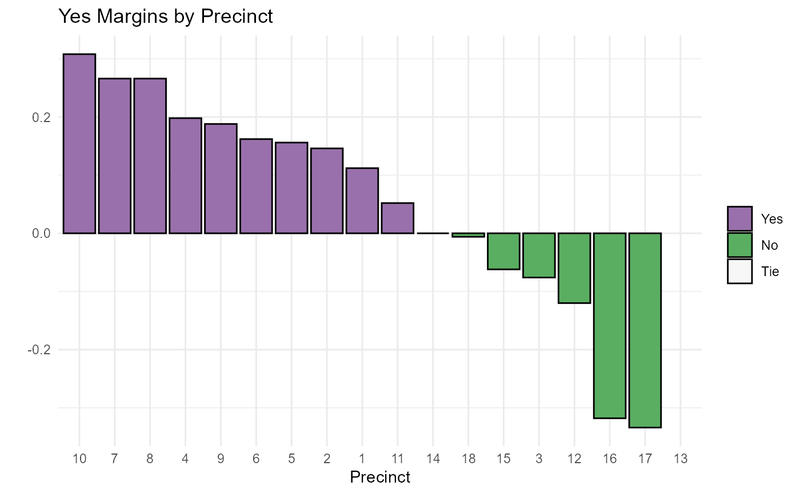

R/bar_graph_of_winner_pct_margins.R
bargraph_of_margins.RdThis function expects data in the format generated by the wrangle_results() or wrangle_more_cols() functions.
bargraph_of_margins(
election_df,
district_col,
margin_col,
headline = "",
palette = c("#9970ab", "#5aae61", "#f7f7f7"),
brewer_palette = FALSE,
winner_col = Winner,
theme = theme_minimal(),
order_bars_desc = FALSE
)data frame of election results generated by wrangle_results() or wrangle_more_cols()
name of the election district column NOT in quotation marks
name of the column with percent or vote margins NOT in quotation marks
character string for desired graph headline, defaults to ""
if brewer_palette is FALSE, character string of hex colors for winner, loser, and ties if brewer palette is TRUE, character string with RColorBrewer palette name or integer with palette number.
logical if TRUE use an RColorBrewer palette
name of column with the winner for each district NOT in quotation marks, defaults to Winner.
ggplot theme function. Defaults to theme_minimal() but allows for easy change of theme while still using function.
logical should bars be ordered by descending value? Defaults to FALSE
ggplot object
my_file <- system.file("extdata", "FakeElectionResults.xlsx", package = "elections2")
my_election_results <- wrangle_results(my_file)
bargraph_of_margins(my_election_results, Precinct, Yes_Pct_Margin, order_bars_desc = TRUE, headline = "Yes Margins by Precinct")
#> Warning: Removed 1 rows containing missing values (position_stack).
